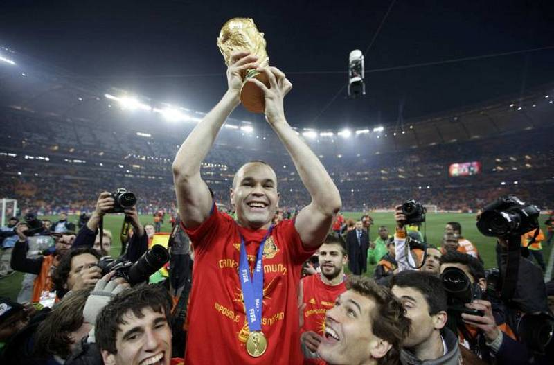

Miguel mesa García

Instagram
Biografía
Miguel Mesa García, nacido el 26 de noviembre de 2002 fue nombrado 5 veces conseutivas el mejor jugador del mundo por la FIFA. En el Real Madrid llegaron sus primeros triunfos llegando a marcar hasta 90 goles en la temporada 18/19 y convirtiendose asi en el mayor goleador en una sola temporada, sus mejores hazañas saldrian a la luz en la Champions donde llego a hacer hatt trick en todos los partidos de la competicion convirtiendose asi en el primer y unico jugador que lo ha conseguido hasta la fecha, incluso consiguio levantar la copa de la liga de campeones 4 veces consecutivas. Su mayor deseo era levantar la copa del mundo con su seleccion, la seleccion Española.. En el mundial 2022 consiguio eliminar la seleccion de Croacia del honorable Luka Modric en los octavos de final, en cuartos se encontraria a la gran Brasil de Neymar, Vinicius... y aun asi consiguio marcar 4 goles ganando asi de goleada y pasando sobrados a la semifinal que se enfrentaria a la Portugal de CR7. Consiguio asistir y marcar otros 2 goles claves para asegurarse el pase a la final partido que no seria facil de jugar pues se encontraria con la Argentina de Leo Messi. Llegados a la final el partido fue muy parejo y habian ocasiones claras para ambas selecciones, en el descanso el marcador estaria 0-0 pero estaba a punto de desempatar... recien comenzo la segunda mitad Miguel Mesa consiguio un gol historico desde mas de 40 metros de distancia abriendo asi el marcador a favor de la Seleccion Española, minutos mas tarde recibirian un fuerte contra ataque de Argentina que igualaria el marcador con un gol de Messi. Pasando los 15 min desde el empate, el español Mesa consiguio anotar en un remate de cabeza imparable lo que volvia a poner en cabeza a la seleccion Española.. aun asi Argentia seguia buscando el empate pero mas tarde el chico Mesa volvio a romper el marcador marcando asi su 3 gol en el minuto 89 y sentenciando el partido definitivamente, convirtiendose asi en el jugador con mejores numeros en una temporada en la historia del futbol y coronandose como campeon de Liga, Champions, Copa del Rey, Supercopa Española, Mundial de Clubes y Copa del mundo (entre otros premios personales). Gracias a estos numeros fue nominado al balon de oro que lo disputaban Mbappe, Messi, CR7 y Haaland pero ninguno de estos estuvieron a la altura del Español pues fue el ganador del balon de oro convirtiendose en mejor jugador del mundo y declarado el jugador con mejor temporada de la historia contando numeros y trofeos.